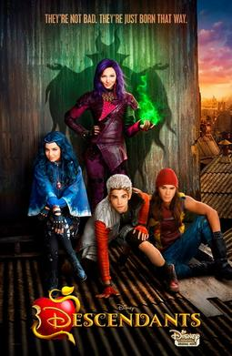
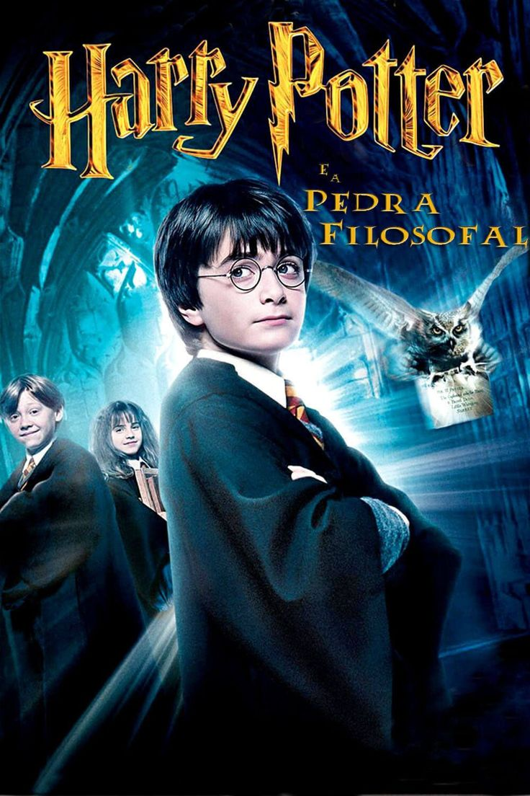
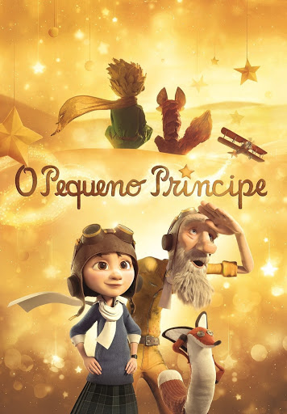
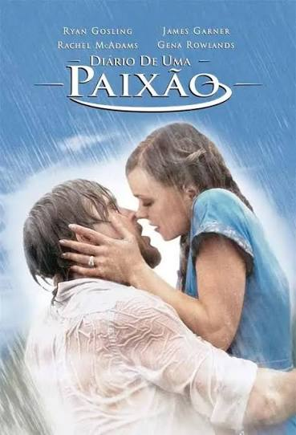
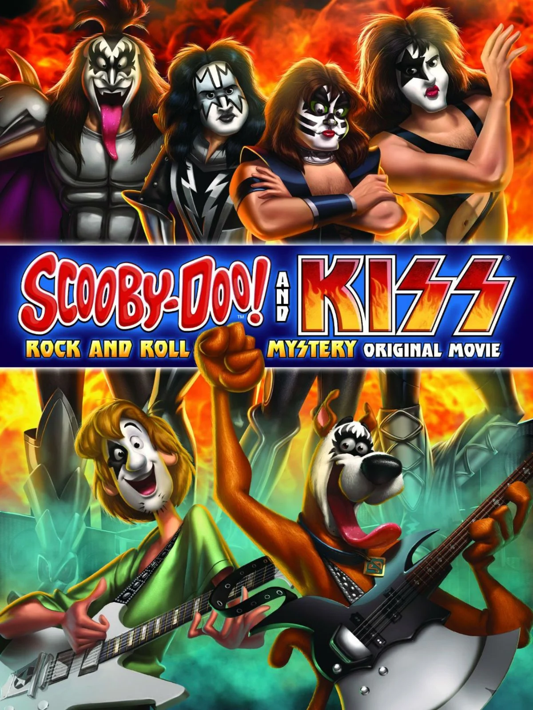

5 filmes favoritos da Lara

Olá! Me chamo Lara, tenho 16 anos, sou estudante do IFPI - Campus Zona Sul e agora vou compartilhar cinco filmes que estão entre os meus favoritos.
Descendentes

Ano de lançamento:31/07/2015
Duração:1 hora e 52 minutos
Gênero:fantasia, musical
Sinopse
Os principais vilões dos contos de fadas vivem isolados em uma ilha distante. Entretanto, quando o filho da Bela e da Fera está prestes a assumir o reino de Auradon, ele resolve permitir que os filhos de quatro vilões convivam e estudem na principal escola do local. É lá que Mal (Dove Cameron), filha de Malévola (Kristen Chenoweth); Evie (Sofia Carson), filha da Rainha Má (Kathy Najimy); Jay (Booboo Stewart), filho de Jafar (Maz Jobrani); e Carlos (Cameron Boyce), filho de Cruela De Vil (Wendy Raquel Robinson), precisarão decidir se seguirão o caminho dos pais ou se tomarão outro rumo.
Por que eu gosto desse filme?
Descendentes fez parte da minha infância e do meu coração desde que assisti pela primeira vez. Amo todo o úniverso que o filme reúne, com princesas, príncipes, fadas, vilões e seus filhos, além da mensagem de que ninguém precisa ser igual ao seus pais pra construir a própria história. Gosto das amizades verdadeiras, das piadas, dos persongens e, principalmente, das músicas, que macaram muito a minha infância. É aquele filme que nunca consigo enjoar e que sempre vou amar.
Harry Potter e a Pedra Filosofal

Ano de lançamento:16/11/2001
Duração:2 horas e 32 minutos
Gênero:fantasia e aventura
Sinopse
Harry Potter é um garoto órfão que vive infeliz com seus tios, os Dursleys. Ele recebe uma carta contendo um convite para ingressar em Hogwarts, uma famosa escola especializada em formar jovens bruxos. Inicialmente, Harry é impedido de ler a carta por seu tio, mas logo recebe a visita de Hagrid, o guarda-caça de Hogwarts, que chega para levá-lo até a escola. Harry adentra um mundo mágico que jamais imaginara, vivendo diversas aventuras com seus novos amigos, Rony Weasley e Hermione Granger.
Por que eu gosto desse filme?
Harry Potter e a Pedra Filosofal é o meu favorito da saga porque representa o início de tudo. Amo acompanhar Harry descobrindo que ele não é apenas o menino que vivia com os Dursley, mas alguém que pertence a um mundo completamente novo. É impossível não me encantar com a descoberta do mundo bruxo, Hogwarts, o chapéu seletor e o começo da amizade entre Harry, Hermione e Rony. Além de amar todo o universo de Harry Potter, esse filme é reconfortante para mim e sempre funcina como uma escolha perfeita pra reassistir.
O Pequeno Príncipe

Ano de lançamento:20/08/2015
Duração:1 hora e 48 minutos
Gênero:animação e fantasia
Sinopse
Uma garota acaba de se mudar com a mãe, uma controladora obsessiva que deseja definir antecipadamente todos os passos da filha para que ela seja aprovada em uma escola conceituada. Entretanto, um acidente provocado por seu vizinho faz com que a hélice de um avião abra um enorme buraco em sua casa. Curiosa em saber como o objeto parou ali, ela decide investigar. Logo conhece e se torna amiga de seu novo vizinho, um senhor que lhe conta a história de um pequeno príncipe que vive em um asteróide com sua rosa e, um dia, encontrou um aviador perdido no deserto em plena Terra.
Por que eu gosto desse filme?
O Pequeno Príncipe é um dos meus filmes favoritos porque me fa pensar sobre a vida de uma forma diferente. Amo todas as suas metáforas e ensinamentos, principalmente a ideia de que, ao crescer, não devemos esquecer aquilo que as crianças sabem e os adultos acabam deixando pra trás. É um filme que me fez sentir nolstagia da infância e refletir sobre a importância de realmente viver, sentir, amar e enxergar o que é essencial. Quero crescer, mas sem esquecer de olhar para a vida com o coração. Além disso, amo a forma como o filme mostra que muita vezes os aultos ficam tão procupados com responsabilidades, trabalho e objetivos que aabam esquecendo de simplesmente viver. A história da menina também me marcou muito, pois mostra como uma criança precis ser ouvida, receber amor e ter a liberdade de ser criança, e não apenas seguir um caminho planejado pelos outros. É um filme lindo, cheio de ensinamentos que me fazem terminar a história pensando em quem eu sou, em quero me tornar e o que realmente importa na vida.
Diário de uma Paixão

Ano de lançamento:25/06/2004
Duração:2 horas e 3 minutos
Gênero:romance e drama
Sinopse
Em uma clínica de repouso, um idoso lê diariamente o diário de uma história de amor para uma mulher com perda de memória, tentando ajudá-la a recordar o próprio passado.O caderno narra o romance de Noah e Allie, dois jovens de realidades muito diferentes que vivem uma paixão avassaladora na década de 1940. Apesar de separados pelo preconceito da família dela e pelos caminhos da vida, o sentimento entre eles resiste ao tempo e às adversidades, conectando o passado e o presente de forma emocionante.
Por que eu gosto desse filme?
Diário de uma Paixão é um dos meus filmes favoritos porque mostra um amor que não é perfeito, mas é verdadeiro. É um romance apaixonante, daqueles que fazem você acompanhar cada momento do casal, torcer por eles e sonhar em viver algo intenso assim. Amo como o filme mostra que existem dificuldades, diferenças e contratempos, mas que, mesmo depois de tantos anos, o sentimento entre Allie e Noah nunca desapareceu. Noah esperou por ela, construiu a casa que ela sonhava e continuou ao seu lado mesmo nos momentos mais difíceis. É uma história que me fez chorar, sorrir e acreditar em um amor tão forte que consegue permanecer mesmo quando tudo parece tentar separá-lo. No final, não é sobre um amor perfeito ou um simples final feliz, mas sobre amar até o último momento e nunca esquecer quem realmente marcou o seu coração. É daqueles romances que sempre funcionam e me deixam pensando: meu Deus, será que um amor assim realmente existe?
Scooby-Doo e Kiss: O Mistério do Rock and Roll

Ano de lançamento:10/07/2015
Duração:1 hora e 19 minutos
Gênero:animação e mistério
Sinopse
Um monstro começa a aterrorizar um parque de diversões, e a turma da Mistério S.A. fica frente a frente com a lendária banda de rock Kiss, que afirma também estar lá para solucionar o enigma. Agora, os dois grupos precisam trabalhar juntos enquanto as pistas os levam a uma viagem cósmica a outra dimensão.
Por que eu gosto desse filme?
Scooby-Doo! e Kiss: O Mistério do Rock é um dos meus filmes favoritos porque reúne várias coisas que marcaram a minha infância. Sempre amei Scooby-Doo e assisti aos filmes e séries inúmeras vezes, mas esse ganhou um carinho especial por ser um dos que mais reassisti na vida. Quando era criança, fiquei encantada com a mistura de mistério, magia de verdade e uma banda de rock que eu nem sabia que existia fora do filme. Foi através dele que conheci Kiss e, sem perceber, comecei a descobrir o rock e músicas que ficaram marcadas na minha cabeça até hoje. Além disso, amo a diversão, o humor e todos os personagens que fazem Scooby-Doo ser tão especial para mim. É um daqueles filmes que consigo assistir várias vezes e ainda sentir a mesma alegria de quando era criança.